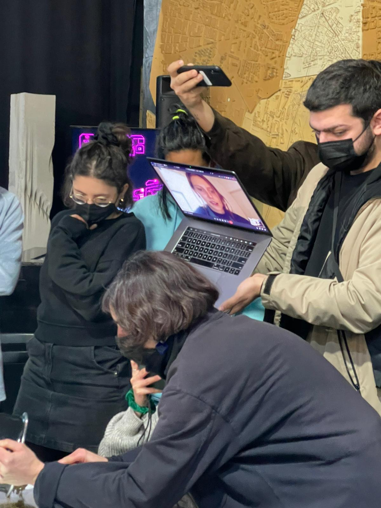
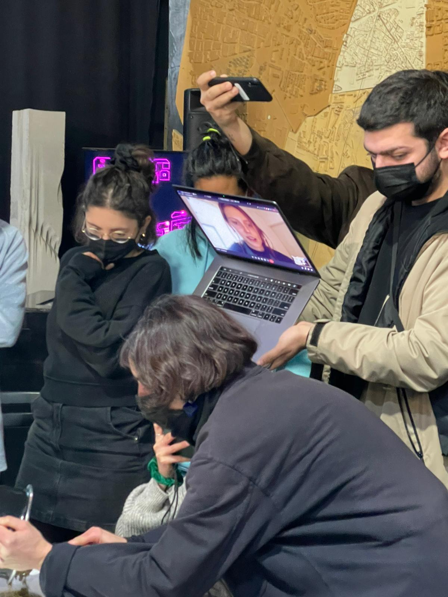

Spoiler alert: this week did not get much better than last week, as I hoped it would.
On Monday afternoon, following our Branding class with Kate, I got my phone stolen on my way to the metro station. The next day, I discovered I had Covid after feeling very sick in the Design Studio class.
I'm beginning to wonder whether I pissed off some witches and got cursed.
Anyways, I figured that there's not much more "First Person Perspective" than documenting my life in isolation, from thoughts, to actions, to feelings. I've decided to turn this weekly reflection into a little memo box of my day to day life, given that my experience will vary quite a lot from the rest of the class, who at this point is back to doing most of the lessons in person.

My positive covid test and my "new design space", a diy kitchen in my bedroom.
Monday
Branding class: First time meeting Kate, online. I love her personality and attitude. I already know a lot about the branding from previous courses, and I really like it even though I don't like selling people stuff they don't need. This course didn't feel like that. Then we had a Future Talk with Laura Forlano where we discussed new technologies and disabilities.
Got my phone stolen at 17.00. Spent the rest of the evening and night at the police station. Got home at 11pm and had dinner at midnight.
Tuesday
One of our first in person classes again, Design Studio at Elisava. I was really excited for today because I couldn't wait to hear my classmates' Design Intervention ideas. However, about an hour through, I started shivering uncontrollably. I put on my jacket hoping it'd get better, but it did not. Instead, my body kept shaking more and more until I started to get scared that there was something wrong. I left the class early, anxiously telling Dafne and Tomas Vivanco that I was not feeling well. On my way home I thought I was going to pass out, but luckily I didn't. I tested positive for Covid that night, with 39.4C degree fever.
Wednesday
Woke up feeling terrible, but still participated in the fabacademy class. It was very hard to follow along because I received the correct link 45minutes into the class and of audio quality was not good, especially when people asked questions. I also didn't understand why we were learning about github and html this far into the course, after 4 months of learning it on our own. I felt like giving up multiple times. With still a 39.3C fever, I decided to take a nap in the afternoon.
My design space progresses.
Thursday
When I woke up in the morning, I was surprised at how good I was feeling. With barely any fever and very few symptoms, I felt as though I was already on the road to recovery. Remixing Materials workshop was today and I was bummed to not be there in person. I cheered up when people started passing me around and showed me the little experiments they were working on. It was the most engaged I had felt in any of the online calls. It resulted in these funny pics, courtesy of Roberto and Paul B.

Wednesday
Woke up feeling terrible, but still participated in the fabacademy class. It was very hard to follow along because I received the correct link 45minutes into the class and of audio quality was not good, especially when people asked questions. I also didn't understand why we were learning about github and html this far into the course, after 4 months of learning it on our own. I felt like giving up multiple times. With still a 39.3C fever, I decided to take a nap in the afternoon.
My design space progresses.Thursday
When I woke up in the morning, I was surprised at how good I was feeling. With barely any fever and very few symptoms, I felt as though I was already on the road to recovery. Remixing Materials workshop was today and I was bummed to not be there in person. I cheered up when people started passing me around and showed me the little experiments they were working on. It was the most engaged I had felt in any of the online calls. It resulted in these funny pics, courtesy of Roberto and Paul B.
